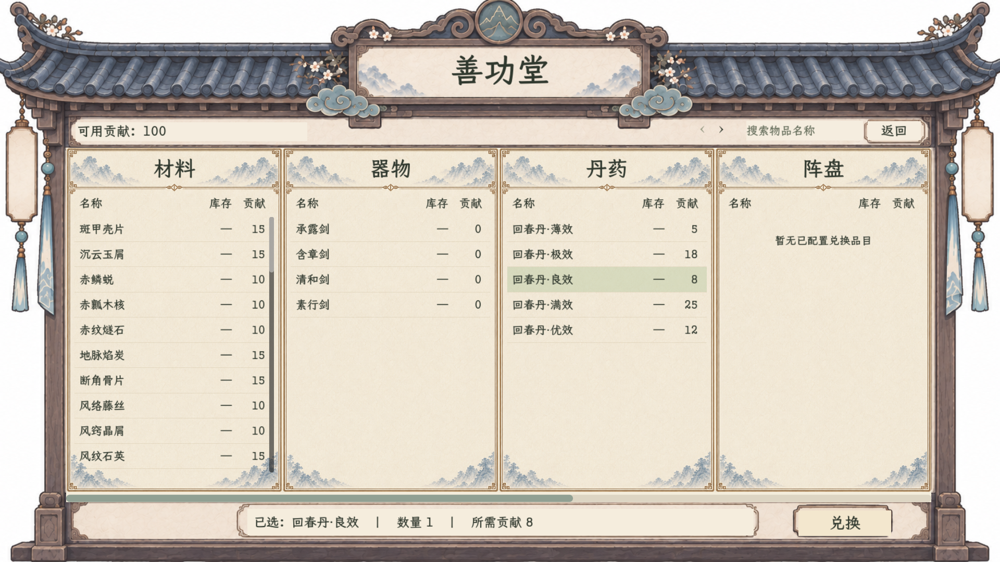
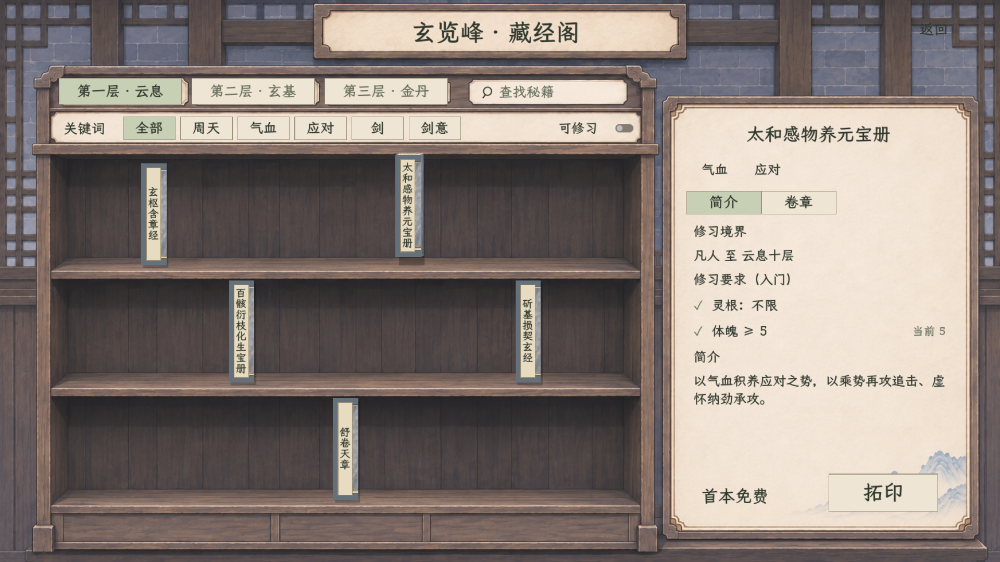

纸
暖纸 · 阅读
正文、清册、详情与办理页。
淡纹退到边角。
全局界面风格母板 · 二〇二六年十一月
以善功堂、藏经阁为基准。
统一材质、文字、控件与做工，各页按功能组织。
从已满意的界面里提取共同语言
保留手绘的质感与厚度。
文字所在的地方，安静、清楚。

完整承托、浅纸目录、淡山纹。
借用它的做工与完成度，其他页面另定构图。

木石相接、布面书册、纸面详情。
厚度来自边沿、侧面和接触影。
正文、清册、详情与办理页。
淡纹退到边角。
压条、页框、书架与题签。
接缝连贯，薄边有厚度。
结构衬托与专用盘面。
色块沉静，边沿克制。
行囊、领取与物品空间。
保留已认可的浅绢 v5。
#303D38#EFE7D6#70615A#687681#C7CFB5#9A8A71#985344人物用卷宗，静室用案面，行囊用绢布；深墨提示、轻量 HUD 与逐格石盘保留专用表现。
同一套控件，贯穿所有面板
可点击导航、选项与按钮。
此页只演示外观，不执行游戏操作。
主信息放在完整、安静的纸面上。用留白和细线分组，数值沿列对齐。
主悬停无内滚动；浅绢、物品格、书脊、战斗盘和加载画面保留已经确认的专用要求。
跨页面的材质组合示意
以下只用于看统一后的气质。
功能、数值与正式布局沿各自现行方案。
木边与纸册支撑人物资料，目录与详情有明确主次。
实际数据：—页框、题签、纸面、按钮、输入、悬停共用同一组材质与状态。
用两种不同结构检验统一效果，再按面板族逐步适配。
行囊浅绢、深墨提示、紧凑 HUD、战斗石盘各有用途，共同服从色谱与字级。
本轮不重做这两页，也不改现有炼丹、炼器操作页。租用入口待全局风格明确后继续细化。
详情、公式与人物数据沿现行来源。
同一静室背景贯穿各子页
真实条件与现有操作保持。
统一题签、纸色和按钮做工。
名称与数量沿列对齐。
索引、按钮与提示共用。
局部格线示意 · 不表示容量
已认可 v5 保留；200 格、36 格距与五区位置保持。确认用度与租期，
再进入现有炼制界面。
场所可以有自己的题签与陈设。
木纸做工与全局一致。
数值未定，此处只看材质组合。